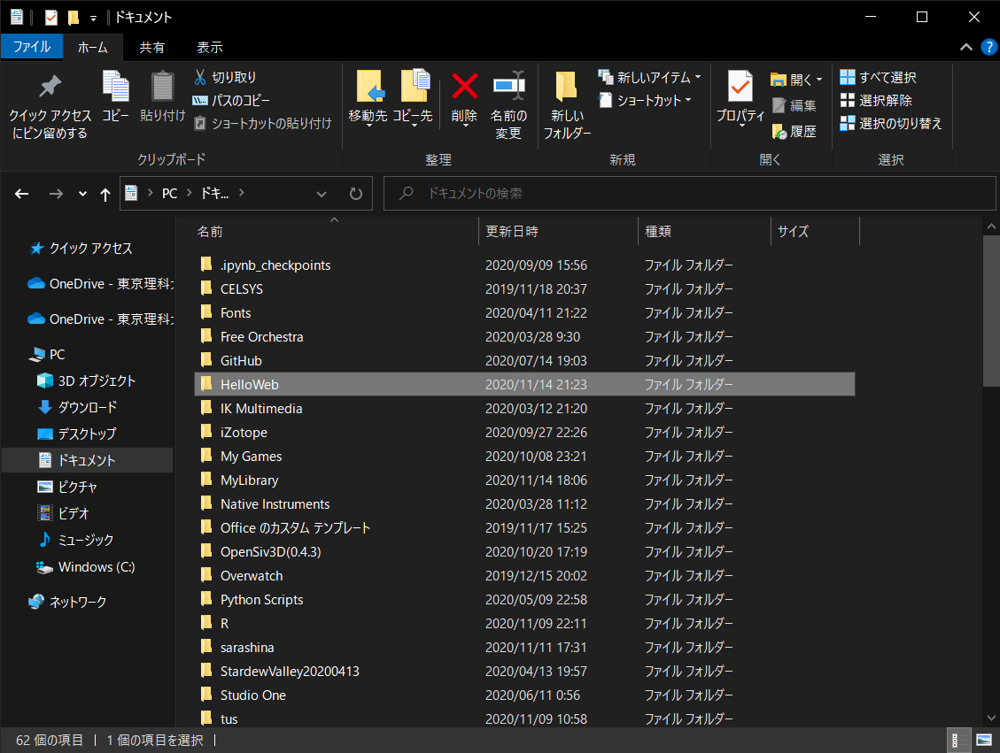
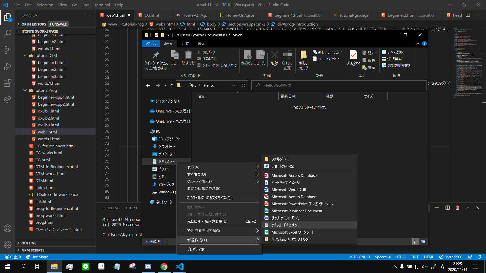
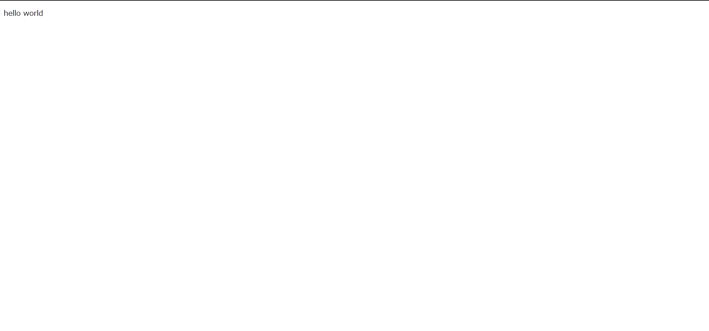

このWebサイトはITCの部員が制作しているものです。
このサイトと同じようなWebサイトを作りたいという人もいるかもしれませんので、Webサイトの基本的な作り方をここにまとめたいと思います。
Webサイトを制作していくにあたって、環境構築を構築していきましょう。
ここではvsCodeを使用したいと思います。
vsCodeはこちらのサイトでダウンロードできます。
visual studioと比べ軽量に動作しますので、スペックが不安なPCでも動かしやすいです。
Webサイトを作るために、ファイルを管理するためのフォルダを作成しましょう。
ここではHelloWebというフォルダにしました。自分がわかればどんな名前でも大丈夫です。
フォルダの中に移動し、index.htmlを作りましょう。右クリックから「新規作成」->「テキスト ドキュメント」から作ることができます。
index.htmlとは、サイトを作るにあたってメインのページとなる特別な名前のファイルです。
ホームページの入り口となるサイトにはこの名前をつけましょう
さて、ここからvsCodeでindex.htmlを編集していきましょう。
index.htmlを右クリックすると、codeで開くという項目があると思います。それをクリックして、vscodeで編集画面を開きましょう。
htmlに基本的な構成要素を説明します。
htmlは様々なタグの組み合わせで構成されています。タグは< >で囲みます。例えば段落を示すpタグであれば、<p> {内容} </p>というふうに、内容を<p></p>で囲みます。
そのうち、htmlになくてはならないタグがいくつかあります。
ひとまずはこれらのタグをindex.html内に書いていきましょう。
<!DOCTYPE html> <html lang="ja"> <head> </head> <body> </body> </html>
これがサイトを構成する最小単位となります。
サイトに文字や画像を表示したい場合、bodyタグの中に記述していきます。例えば「hello world」という文字列を表示する場合、
<!DOCTYPE html>
<html lang="ja">
<head>
</head>
<body>
<p>hello world</p>
</body>
</html>
これで以下のような表示が出てきたと思います。このようにWebサイトは作られていきます。
